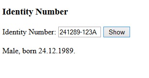
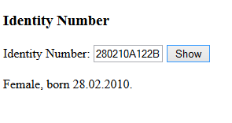
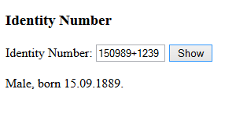

Make a program, that asks for the identity number (Finnish 'hetu', 11 characters) and tells, whether the person is male or female. The second last character of the identity number tells the gender: even digit/number means woman, odd number man.
Program also tells the date of birth in the format of dd.mm.yyyy.
Sample output for shown input:

HINTS:
- Telling, whether the person is male or female. The second last character of the identity number tells the gender: even digit/number means woman, odd number man.
- The charAt() method can be used to get the second last character.
- The parseInt() function can be used to convert number text to number.
- If you take a remainder of that number divided by 2 with the remainder/modulo operator % you will get to know if the number is odd or even. (E.g. 7 % 2 gives 1 for the remainder, thus 7 is an odd number).
- Telling the date of birth in the format of dd.mm.yyyy. If the identity number has '+' as the separator character then the century is 1800. If the separator is '-', the century is 1900. If the separator is 'A', the century is 2000.
- With the subStr() method you can take certain characters from the original string.
- The charAt() method gives you the separator.
- The parseInt() function can be used to convert number text to number.
- You need to do some calculation with numbers to attach the century to the year.
Sample output for shown input:


Submit a link to your code (myy or jsbin).
JS Bin